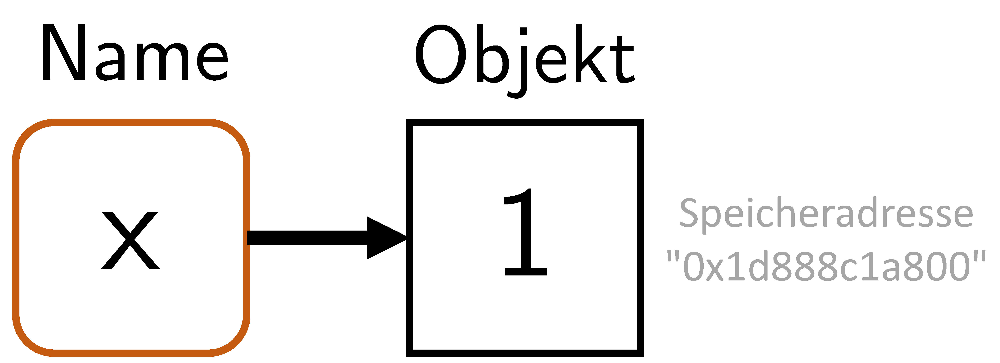
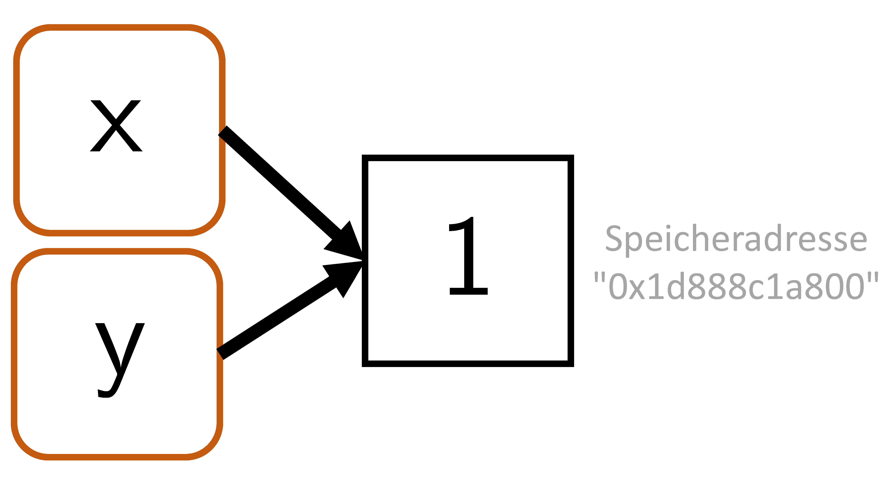
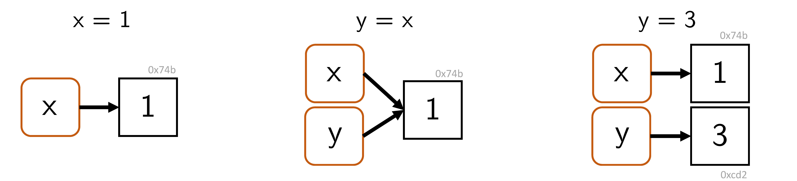

[1] 212 Arithmetik und Variablen
12.1 Arithmetik
Öffnet man ein R Terminal, so kann man dieses zunächst einmal als Taschenrechner nutzen, wie folgendes Beispiel zeigt.
Im Terminal erscheint dabei einerseits das Ergebnis \(2\), andererseits mit [1] ein Hinweis darauf, dass das Ergebnis der erste Eintrag in dem von R erzeugten Ergebnisvektor ist. Vektoren werden wir in Kapitel 14 im Detail behandeln. Weitere Beispiele für den Gebrauch eines R Terminals als Taschenrechner sind folgende.
Tabelle 12.1 gibt einen ersten Überblick über die in Base R verfügbaren arithmetischen Operatoren. Neben den vertrauten Operationen der Addition, Subtraktion, Multiplikation, Division und Potenzierung bietet Base R auch spezielle Operatoren für weitergehende arithmetische Berechnungen. Dazu gehören etwa die Matrixmultiplikation, die ganzzahlige Division (5 %/% 2 = 2) sowie die Modulo-Operation, die den Rest einer ganzzahligen Division liefert (5 %% 2 = 1).
| Operation | Operator |
|---|---|
| Addition | + |
| Subtraktion | - |
| Multiplikation | * |
| Division | / |
| Potenz | ^ |
| Matrixmultiplikation | %*% |
| Ganzzahlige Division | %/% |
| Modulo-Operation | %% |
Neben den arithmetischen Operatoren zur Verknüpfung zweier Zahlen bietet Base R natürlich auch die Möglichkeit, mathematische Standardfunktionen auszuwerten. Einen ersten Überblick dazu gibt Tabelle 12.2.
| Funktion | Aufruf |
|---|---|
| Exponentialfunktion | exp(x) |
| Logarithmusfunktion | log(x) |
| Betrag | abs(x) |
| Wurzel | sqrt(x) |
| Aufrunden | ceiling(x) |
| Abrunden | floor(x) |
| Mathematisches Runden | round(x) |
Obwohl die in Tabelle 12.1 aufgeführten Operatoren und die in Tabelle 12.2 aufgeführten Funktionen auf den ersten Blick einen etwas anderen Charakter haben, unterscheidet Base R formal nicht zwischen Operatoren und Funktionen. Speziell können Operatoren mithilfe der sogenannten Infixnotation auch als Funktionen mehrerer Argumente genutzt und verstanden werden. Untenstehender R-Code zeigt, wie die arithmetische Verknüpfung \(2 + 3\) als Ausführung einer Funktion der Form \(+ : \mathbb{R}^2 \to \mathbb{R}\) mit der Bezeichnung “+” verstanden werden kann.
Schließlich bietet Base R wie jede Programmiersprache auch die Möglichkeit, Ausdrücke auf ihren logischen Gehalt hin auszuwerten. Dabei ist Logik hier im Sinne der aus Kapitel 1 Aussagenlogik zu verstehen, in der Aussagen einen von zwei Werten annehmen können, wahr (TRUE) oder falsch (FALSE). Die in Tabelle 12.3 aufgeführten Relationsoperatoren <, <=,>, und >= werden zumeist auf numerische Werte angewendet. Die Gleichheitsoperatoren == und != können auf beliebige Datenstrukturen angewendet werden. Die Operatoren zur Verknüpfung logischer Werte & und | schließlich entsprechen den aus Kapitel 1 bekannten Begriffen der logischen Konjunktion (“und”) und Disjunktion (“nicht-exklusives oder”).
| Logische Verknüpfung | Operator |
|---|---|
| Gleich | == |
| Ungleich | != |
| Konjunktion | & |
| Disjunktion | | |
| Kleiner | < |
| Kleiner-gleich | <= |
Die in Tabelle 12.1, Tabelle 12.2 und Tabelle 12.3 aufgelisteten Operatoren und Funktionen stellen nur einen kleinen Auszug der von Base R bereitgestellten Operatoren und Funktionen dar. Einen vollständigen Überblick bietet der Aufruf names(methods:::.BasicFunsList), der die Namen aller von Base R bereitgestellten Funktionen auflistet. Viele dieser Funktionen werden wir im weiteren Verlauf kennenlernen.
[1] "$" "$<-" "["
[4] "[<-" "[[" "[[<-"
[7] "crossprod" "tcrossprod" "xtfrm"
[10] "c" "all" "any"
[13] "sum" "prod" "max"
[16] "min" "range" "cummax"
[19] "rep" "^" "cos"
[22] "levels<-" "cumsum" "asin"
[25] "anyNA" "<=" "Conj"
[28] "exp" "is.matrix" "log10"
[31] "as.environment" "ceiling" "asinh"
[34] "abs" "as.raw" "is.infinite"
[37] "is.array" "floor" "=="
[40] "sign" "cummin" "|"
[43] "round" "Re" "!"
[46] "is.numeric" "acosh" "!="
[49] "names<-" "&" "atanh"
[52] "sinh" ">=" "sin"
[55] "*" "atan" "+"
[58] "length" "length<-" "sinpi"
[61] "-" "is.nan" "/"
[64] "sqrt" "%/%" "as.numeric"
[67] "seq.int" "trunc" "digamma"
[70] "acos" "<" "as.logical"
[73] "cosh" "Mod" "tanpi"
[76] "%*%" "dimnames<-" "log2"
[79] ">" "tanh" "is.na"
[82] "dim" "signif" "gamma"
[85] "is.finite" "as.integer" "dim<-"
[88] "as.double" "lgamma" "Arg"
[91] "log1p" "trigamma" "%%"
[94] "tan" "cumprod" "Im"
[97] "expm1" "as.call" "log"
[100] "as.complex" "cospi" "as.character"
[103] "dimnames" "names" "("
[106] ":" "=" "@"
[109] "{" "~" "&&"
[112] ".C" "baseenv" "quote"
[115] "::" "<-" "is.name"
[118] "if" "||" "attr<-"
[121] "untracemem" ".cache_class" "substitute"
[124] "interactive" "is.call" "switch"
[127] "function" "is.single" "is.null"
[130] "is.language" "is.pairlist" ".External.graphics"
[133] "declare" "globalenv" "class<-"
[136] ".Primitive" "is.logical" "enc2utf8"
[139] "UseMethod" ".subset" "proc.time"
[142] "enc2native" "repeat" ":::"
[145] "<<-" "@<-" "missing"
[148] "nargs" "isS4" ".isMethodsDispatchOn"
[151] "forceAndCall" "Exec" ".primTrace"
[154] "storage.mode<-" ".Call" "unclass"
[157] "gc.time" ".subset2" "environment<-"
[160] "emptyenv" "seq_len" ".External2"
[163] "is.symbol" "class" "on.exit"
[166] "is.raw" "for" "is.complex"
[169] "list" "invisible" "is.character"
[172] "oldClass<-" "is.environment" "attributes"
[175] "break" "return" "attr"
[178] "tracemem" "next" ".Call.graphics"
[181] "standardGeneric" "is.atomic" "retracemem"
[184] "expression" "is.expression" "call"
[187] "is.object" "pos.to.env" "attributes<-"
[190] ".primUntrace" "...length" "Tailcall"
[193] ".External" "oldClass" ".Internal"
[196] ".Fortran" "browser" "is.double"
[199] ".class2" "while" "nzchar"
[202] "is.list" "lazyLoadDBfetch" "unCfillPOSIXlt"
[205] "...elt" "...names" "is.integer"
[208] "is.function" "is.recursive" "seq_along"
[211] "unlist" "as.vector" "lengths" 12.2 Präzedenz
Eine wichtige Eigenschaft bei der Benutzung von Operatoren ist ihre durch die jeweilige Programmiersprache festgelegte Präzedenz. Dabei handelt es sich um von den Programmiersprachenentwicklern festgelegte Regeln zur Rangfolge von Operatoren. Aus der Mathematik ist man insbesondere die Präzedenzregel “Punktrechnung geht vor Strichrechnung” gewöhnt. Diese besagt, dass in Ausdrücken, in denen sowohl Produkte oder Divisionen als auch Summen oder Differenzen vorkommen, die Produkte oder Divisionen als erstes ausgeführt werden und ihre Ergebnisse dann als Zweites in die Summen- oder Differenzbildung eingehen. So ergibt sich zum Beispiel \[ 2 \cdot 5 - 3 = 10 - 3 = 7 \tag{12.1}\] und nicht etwa \[ 2 \cdot 5 - 3 \neq 2 \cdot 2 = 4. \tag{12.2}\] Wir setzen als bekannt voraus, dass die Präzedenzregeln durch Klammerbildung betont oder überschrieben werden können. So ist beispielsweise der Ausdruck in Gleichung 12.1 äquivalent zu \[ (2 \cdot 5) - 3 = 10 - 3 = 7 \tag{12.3}\] und die in Gleichung 12.2 beabsichtigte Rechnung kann durch Klammersetzung als \[ 2 \cdot (5 - 3) = 2 \cdot 2 = 4 \tag{12.4}\] richtig gestellt werden. Diese vertrauten Rechenregeln und ihre Überschreibung durch Klammern finden sich in R entsprechend implementiert:
Eine weitere als bekannt vorausgesetzte Präzedenzregel ist, dass Potenzen eine höhere Präzedenz als Produkte oder Divisionen und Summen oder Differenzen haben. Es ergibt sich also beispielsweise \[\begin{equation} 2^3 + 3 = (2\cdot 2 \cdot 2) + 3 = 8 + 3 = 11 \end{equation}\] und nicht etwa \[\begin{equation} 2^3 + 3 \neq 2^{3 + 3} = 2^6 = 64. \end{equation}\] Entsprechend gelten in R
Eine wichtige Besonderheit hinsichtlich der Präzedenzregeln in R ist, dass auch unitäre Vorzeichen, also Vorzeichen, die eine Zahl als eine negative Zahl identifizieren, in den Bereich der Operatorpräzedenz fallen. Wenn man auch geneigt sein könnte, einen Ausdruck der Form \(-1^2\) als \((-1)^2 = 1\) zu interpretieren, so folgt R dennoch der Regel, dass in \(-1^2\) zunächst die Potenz und dann das Vorzeichen ausgewertet werden, dass also \(-1^2 = -(1^2) = -1\) gilt:
Weiterhin werden in R Potenzen von rechts nach links abgearbeitet, Produkte, Divisionen, Summen und Differenzen dagegen von links nach rechts. So gelten beispielsweise
aber
[1] 5.75[1] 2.15Generell gilt, dass man in der Programmierung Präzedenzregeln nicht raten sollte oder versuchen sollte, sie logisch herzuleiten. Ebenso wenig sollte man darauf vertrauen, dass die Programmiersprachenentwickler die Präzedenzregeln vermutlich gemäß dem eigenen Kenntnisstand implementiert haben werden. Stattdessen sollte man Berechnungen immer kritisch überprüfen und zur Sicherheit die beabsichtigte Rechnung lieber einmal zu viel als einmal zu wenig mit Klammern betonen.
Neben den hier betrachteten Präzedenzregeln für die Grundrechenarten gibt es in R eine ganze Reihe weiterer Regeln zum Umgang mit vielen weiteren Operatoren, von denen wir bisher nur sehr wenige kennengelernt haben. Wenn man sich beim Erlernen einer Programmiersprache mit einem neuen Operator vertraut macht, sollte man also für sich auch unbedingt die Präzedenz dieses Operators klären. Der in Abbildung 12.1 gezeigte und mit dem Befehl ?Syntax aufzurufende Text der R Dokumentation diskutiert die in R geltenden Präzedenzregeln vollumfänglich und sollte bei der Arbeit mit R häufig konsultiert werden.

12.3 Variablen
In der Programmierung sind Variablen abstrakte Behälter für Daten, deren Inhalt im Verlauf einer Programmausführung geändert werden kann. Variablen werden im Programmcode mit Namen bezeichnet und besitzen bei Programmausführung eine Adresse im Arbeitsspeicher. Variablen können verschiedenen Typs sein. Das heißt, dass Variablen unterschiedliche Arten von Daten, und nur diese, repräsentieren. In traditionellen Programmiersprachen wird der Typ einer Variable explizit deklariert. Dabei wird zu Beginn der Programmausführung festgelegt, welche Art von Daten eine bestimmte Variable repräsentieren kann. Die Deklaration einer Variable A, die zum Beispiel ganze Zahlen und eben nur diese repräsentieren kann, hat etwa die Form
In der Folge kann der Variable A dann ein Wert vom Typ ganze Zahl zugewiesen werden, beispielsweise in der Form
In einer 4GL-Sprache wie R wird der Variablentyp üblicherweise direkt durch eine Initialisierungsanweisung festgelegt. So deklariert folgender R-Code die Variable a gleichzeitig als vom Typ double (Dezimalzahl) mit dem Wert 1,
In den allermeisten Programmiersprachen ist der Zuweisungsbefehl =. R ist dahingehend besonders, dass es mit <- und -> zusätzliche Zuweisungsbefehle erlaubt: <- weist von rechts nach links zu, -> von links nach rechts. Die übliche Zuweisung von rechts nach links wird auch durch = erreicht. Offiziell empfohlener Zuweisungsbefehl für R ist <-. Dies ist jedoch sehr idiosynkratisch und wir benutzen weitestgehend = wie in jeder anderen Programmiersprache. Ein erstes Beispiel soll den Umgang mit Variablen verdeutlichen.
Beispiel
Wir betrachten folgende Aufgabe:
“Lina geht ins Schreibwarengeschäft und kauft vier Hefte und zwei Stifte. Ein Heft koste 1 Euro und ein Stift koste 3 Euro. Wie viele Dinge kauft Lina insgesamt und wie viel Euro muss Lina insgesamt bezahlen?”
Um die Aufgabe zu lösen, definieren wir zunächst die Variablen anzahl_hefte und anzahl_stifte und weisen ihnen dabei ihre jeweiligen Werte aus der Aufgabe zu.
Nach Zuweisung existieren die Variablen mit den ihnen zugewiesenen Werten nun im Arbeitsspeicher, dem sogenannten Workspace. Der Befehl ls() zeigt die existierenden benutzbaren Variablen im Arbeitsspeicher an.
Entscheidend ist, dass die Variablennamen jetzt wie Zahlen in Berechnungen genutzt werden können. print() gibt dabei Variablenwerte in einem R Terminal aus:
Um den Gesamtpreis zu berechnen, definieren wir als Nächstes die Variablen preis_heft und preis_stift anhand der Aufgabenspezifikation.
Der Gesamtpreis berechnet sich dann wie folgt.
Variablen im Workspace können auch wieder gelöscht werden. rm() (remove) erlaubt das Löschen einzelner Variablen.
[1] "anzahl_dinge" "anzahl_hefte" "anzahl_stifte" "pandoc_dir"
[5] "preis_heft" "preis_stift" "quarto_bin_path"rm(list=ls()) löscht alle Variablen.
Variablennamen
Prinzipiell ist man in der Wahl der Namen für Variablen mit kleineren Einschränkungen frei. Zulässige Variablennamen in R
- bestehen aus Buchstaben, Zahlen, Punkten (.) und Unterstrichen (_),
- beginnen mit einem Buchstaben oder einem Punkt, dann allerdings nicht gefolgt von einer Zahl,
- dürfen keine in R schon belegten Ausdrücke wie
for,if,NaN, … sein.
Hilfestellung zu den Einschränkungen von Variablennamen gibt ?reserved. Eine Funktion, um aus beliebigen Vorschlägen einen syntaktisch zulässigen Variablennamen zu generieren, ist make.names(). Ihre Hilfe beschreibt auch die hier skizzierten Regeln zur Variablenbenennung in weiteren Details. Generell sind sinnvolle Variablen kurz, um im Code Platz zu sparen, und aussagekräftig, um das menschliche Verständnis des Codes zu erhöhen. Meist bestehen Variablen nur aus Kleinbuchstaben und Unterstrichen.
Variablenrepräsentation
Wir wollen uns noch etwas genauer mit dem Verhältnis von Variablennamen (Bezeichnern) und Variableninhalten (Objekten im Arbeitsspeicher) befassen. Die folgenden Begriffe und Zusammenhänge sind insbesondere dann wichtig, wenn Berechnungen an die Grenzen des verfügbaren Arbeitsspeichers gelangen und optimiert werden müssen.
Wir beginnen mit dem Begriff des Binding. Dazu betrachten wir zunächst die folgende Variableninitialisierung:
Intuitiv wird durch dieses Statement eine Variable namens x mit dem Wert 1 erzeugt. Auf technischer Ebene geschehen dabei zwei Dinge (vgl. Abbildung 12.2):
- R erzeugt ein Objekt (Vektor mit Wert 1) mit Arbeitsspeicheradresse
lobstr::obj_addr(x). - R verbindet dieses Objekt mit dem Namen
x(binding), der das Objekt im Arbeitsspeicher referenziert.

Betrachten wir nun folgendes Statement:
Intuitiv wird dabei eine Variable, genannt y, mit Wert gleich dem Wert von x erzeugt. Auf technischer Ebene wird dabei ein neuer Name y erzeugt, der dasselbe Objekt im Arbeitsspeicher referenziert wie x (vgl. Abbildung 12.3).

Man kann sich mithilfe von lobstr::obj_addr(x) und lobstr::obj_addr(y) davon überzeugen, dass die Adressen des Objekts im Arbeitsspeicher identisch sind:
Das betreffende Objekt wird also bei Zuordnung zu y nicht kopiert. Dadurch wird Arbeitsspeicher eingespart.
Weiterhin nutzt R das sogenannte Copy-on-modify Prinzip. Dieses Prinzip besagt, dass ein Objekt im Arbeitsspeicher kopiert wird und eine neue Adresse erhält, sobald es modifiziert wird. Das ursprüngliche Objekt im Arbeitsspeicher bleibt dabei unverändert. Abbildung 12.4 und folgender R-Code verdeutlichen zunächst das Copy-on-Modify Prinzip:
[1] 3
y zugeordneten Werts wird dieser im Arbeitsspeicher kopiert.
Die Tatsache, dass Objekte bei Veränderung im Arbeitsspeicher kopiert werden, die ursprünglichen Objekte aber im Prinzip unverändert erhalten bleiben, wird auch als die Immutability von Objekten in R bezeichnet. Allerdings greift die Immutability von Objekten in R nicht besonders weit, wie folgendes Beispiel zeigt. Dabei wird zunächst ein Objekt einer 1 im Arbeitsspeicher erzeugt, das mit dem Variablennamen x referenziert werden kann. Per Indexing (vgl. Kapitel 13) wird das Objekt dann bei einer beabsichtigten Modifikation im Arbeitsspeicher neu adressiert.
[1] "0x275cba52cb0"[1] "0x275c9b19038"Das Copy-on-modify-Prinzip gilt auch in umgekehrter Reihenfolge. Das heißt, wenn ein Objekt, auf das ein weiterer Variablenname zeigt, verändert wird, so ändert sich das ursprünglich referenzierte Objekt nicht. Folgender R-Code mag dies verdeutlichen.
[1] 1Schließlich ist auch ein Unbinding von Objekten im Arbeitsspeicher möglich, beispielsweise als Folge folgender R Befehle (vgl. Abbildung 12.5):

Das Löschen von nicht referenzierten Objekten im Arbeitsspeicher wird als garbage collection bezeichnet. R löscht nicht referenzierte Objekte im Arbeitsspeicher automatisch, allerdings meist erst dann, wenn der Speicher benötigt wird. Generell funktioniert dies aber gut und es ist in der Regel nicht nötig, aktiv die von R bereitgestellte Funktion gc() zur garbage collection zu benutzen.
Repräsentation fehlender Werte
In der datenanalytischen Programmierung hat man es oft mit fehlenden Werten zu tun, beispielsweise, wenn eine experimentelle Messung bei einer Versuchsperson abgebrochen werden musste. Zur Repräsentation fehlender Werte nutzt R NA (not available). Versucht man mit NA zu rechnen, so ergibt dies meist wieder NA:
Auf NA testet man mit is.na():
[1] NA NA NA NANeben NA besitzt R mit NaN auch eine Möglichkeit zur Darstellung mathematisch nicht definierter Werte. Im Gegensatz zu NA ist NaN immer vom numerischen Typ. Die Ergebnisse beim Rechnen mit NaN ähneln denen mit NA.
Auf NaN testet man mit is.nan()